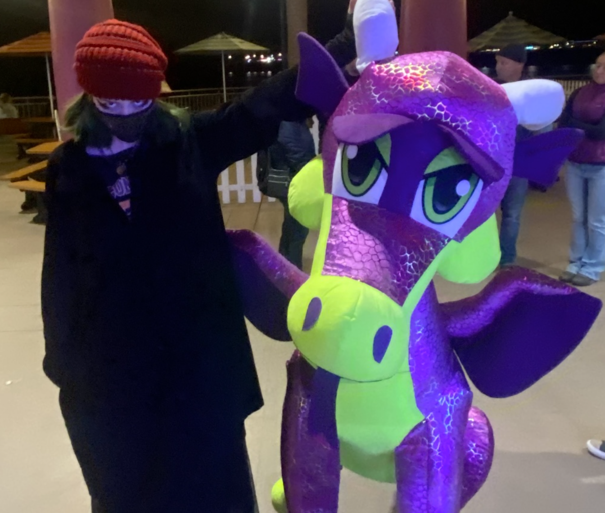

Lab 3 - File Structure and File Transfer
Hello my name is Tory, i really enjoy cooking, playing videogames and drawing. Some of my favorite games at the moment are last of us, overwatch and Wynncraft. I am a cat person over a dog person and i love making coffee and stuff. OH! another thing about me is that i really enjoy gardening.
labs
Challenge
the challenge of the lab is to add a selfie and embed it into the HTML, also to create a bulleted list of the previous and future labs we will be doing. after that you should view it in the browser and test the files locally. for some bonus points you can add a CSS style sheet to your homepage.
Problems
What problems arose? How did you solve them? the photo part.
Reflection
Put your reflections about this assignment here. How did it go? What kind of energy did you put into the assignment?